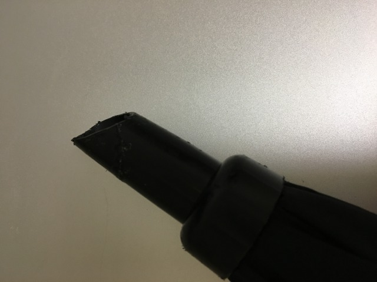
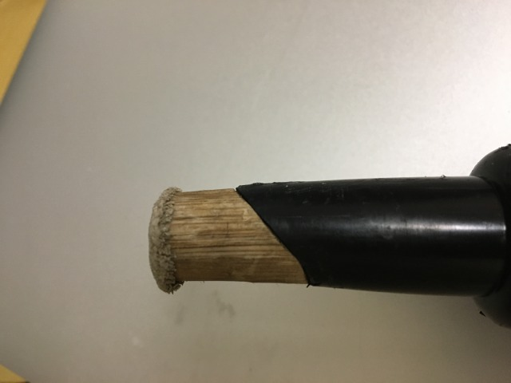
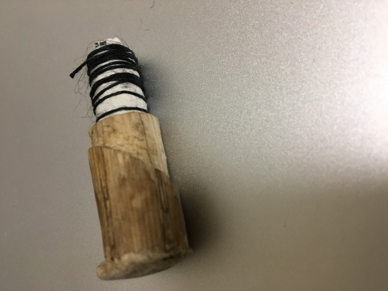
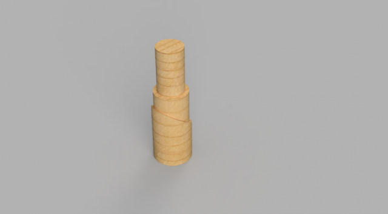
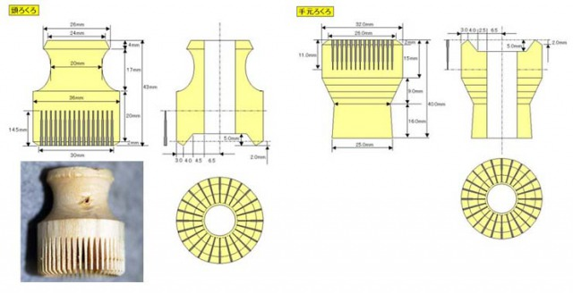
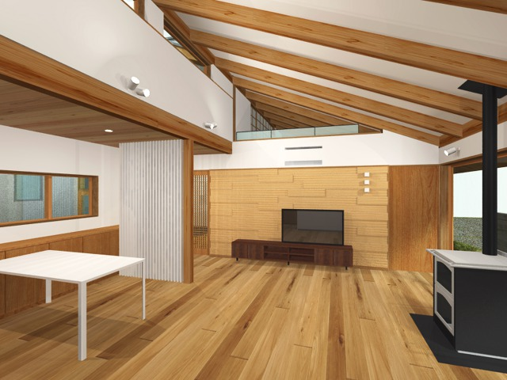

とうとう…
折れた。
折れたというか
砕けた。
ちなみに何の何処かというと傘の先っぽだ。
amazonで見つけたやつ。
ひょっとしたら私がいつも持ち歩いてるヤツ、と言ったら分かるかもしれない。あのでっかいの。
デカさに見合う丈夫さのお陰でかなり丈夫なようだが、調子に乗って杖代わりにカツカツ地面突いてたら石突きが砕けた。そこだけ普通の傘より脆いのは何故だ。解せん。
もちろんそのままカツカツ突いてたら更に砕けるので、上画像の通り切り口を滑らかになるよう削ったあと、木で継いだ。

白状すると木製の模型を作ったつもりだったのだが、見ての通りあまりにも
ピッタリ
嵌ったためすり減るまで使い続ける事にした。

…ハイ、嘘です。下の方削り過ぎました。模型完成した時点で面倒になって糸巻き巻きして使いました。
で。さて。
本題
今回の授業課題は計測と3DCAD。せっかくなので石突きの正確な3D模型を作る事にした。データを木材加工に転用出来るなら節材でも拾って来て新しいの作りたい。
まずは計測。石突きは微妙に円錐、内側に別半径の支柱、切断面は斜め。
うん、面倒だった。だから木彫りの時は模型の時点で諦めたんだ。
まず、石突きの底面は直径17.63mm、半径8.81mm。20mm下で直径16.72mm、半径8.36mm。20mmで直径が0.91mm小さくなるので、
17.63÷0.91=19.373・・・
答えに20をかけて、387.472・・・なので
石突きは延々と伸びていれば底面の半径17.63mm、高さが約387.47mmの円錐となる
ただ、んな長くて鋭い石突きなどあっても邪魔なだけなので、適当な長さで切る。
延々と計算式書くのも面倒なのであとは省略するが
- 底面から最短と最長の差から切り口の角度を割り出して
- 石突きの厚みを測って
- 切り口から支柱までの長さを測って
- 支柱の内径を測った
ちなみに全てノギスで測れた。支柱の内径は小さいノギスが適しているようだったが、深さの関係もあり大きめのノギスが最適だった。
斜めの切り口に関しては、ノギスの計測結果を元に計算して割り出すこととなった。傾斜は約42度。頂点が少し欠けていて、計算より計測が面倒だった。
面が平らな定規を当てがって計測した。
なお、残りの計測結果を挙げると、石突きのプラスチックの厚みがジャスト1mm、支柱の内径が7.26mmだった。
問題は材料の方。石突きがプラスチックの射出成形なのは分かるが、支柱の材料が全くもって分からなかった。かなり丈夫な素材なのは分かるが。
ーーーと、もしかしてと思って「カーボンロッド」で調べるとビンゴだった。独特の表面の模様と質感、間違いないだろう。カーボンとはまた豪勢な素材を使ったものだ。
で、さて。
出来たのがこちら

ついでに
頭ろくろを作った。設計図は

これで、完成したものが
これ。コピーして線対称に貼り付けを繰り返した。面倒だった。
まとめ
これ使いこなせたら絶対カッコいい。使えそうな場面を見つけたら、どんどん練習していこうと思う。
追記

パース図というものを見せてもらった。
建築3Dパースというやつで、これはそれ専用のソフトを使われたらしい。
普段だったらさらっと流してしまうところなのだが、実際に3Dモデリングに触れてみるとその技術に驚かされる。